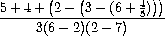

SICP Упражнения из главы 1.1
Exercise 1.1. Простейшие арифметические операции, специальные формы if, define, cond.
10 ;Value: 10
(+ 5 3 4) ;Value: 12
(- 9 1) ;Value: 8
(/ 6 2) ;Value: 3
(+ (* 2 4) (- 4 6)) ;Value: 6
(define a 3) ;Value: a
(define b (+ a 1)) ;Value: b
(+ a b (* a b)) ;Value: 19
(= a b) ;Value: #f
(if (and (> b a) (< b (* a b)))
b
a) ;Value: 4
(cond ((= a 4) 6)
((= b 4) (+ 6 7 a))
(else 25)) ;Value: 16
(+ 2 (if (> b a) b a)) ;Value: 6
(* (cond ((> a b) a)
((< a b) b)
(else -1))
(+ a 1)) ;Value: 16
Exercise 1.2. Перевести формулу с картинки в scheme.

(/ (+ 5 4 (- 2 (- 3 (+ 6 (/ 4 3))))) (* 3 (- 6 2) (- 2 7))) ;Value: -23/90
Exercise 1.3. Определить функцию сложения квадратов, двух чисел, выбрав их из трех аргументов.
(define (squire x)
(* x x))
(define (sum-squire-two-larger x y z)
(if (> x y)
(if (> y z)
(+ (squire x) (squire y))
(+ (squire x) (squire z)))
(if (> x z)
(+ (squire y) (squire x))
(+ (squire y) (squire z)))))
(sum-squire-two-larger 0 5 1)
Exercise 1.4. Scheme позволяет выбирать операнды так же как и обычные переменные.
(define (a-plus-abs-b a b) ;; Можно выбирать какую операцию применить в зависимости от условия, то есть функции можно рассматривать как объекты
((if (> b 0) + -) a b))
(a-plus-abs-b 5 -6)
Exercise 1.5. Пытаемся разобраться в какой последовательности выполняются процедуры и зачем нужны специальные формы.
(define (p) (p)) ;; scheme сначала вычисляет аргументы, а потом тело процедуры (applicative-order evaluation)
;; при попытке вычислить (test 0 (p)) интерпретатор пытается сначала
;; посчитать аргументы функции test, что приводит к бесконечному рекурсивному вызову (define (p) (p))
;; если мы это была специальная форма, а не обычный define, то нам не пришлось бы вычислять (p) и результатом был бы 0
(define (test x y)
(if (= x 0)
0
y))
(test 0 (p))
Exercise 1.6. Хакер Алиса не понимает для чего нужны специальные формы. ``Почему я не могу просто определить if как обычную процедуру в терминах cond?'' - спросила она. Её друг Ева Ли Атор согласился что это действительно можно сделать, и она записала свою реализацию специальной формы if через define:
(define (new-if predicate then-clause else-clause)
(cond (predicate then-clause)
(else else-clause)))
Ева продемонстрировала программу Алисе:
(new-if (= 2 3) 0 5)
;; 5
(new-if (= 1 1) 0 5)
;; 0
Обрадовавшись, Алиса использует new-if чтобы переписать программу получения квадратного корня:
(define (sqrt-iter guess x)
(new-if (good-enough? guess x)
guess
(sqrt-iter (improve guess x)
x)))
Что произойдет при попытке использовать новую версию программы? Объясните.
При попытке вывполнить программу мы получаем сообщение об ошибке
;Aborting!: maximum recursion depth exceeded
обычный if (if <predicate> <consequent> <alternative>) сначала выполняет predicate, затем в зависимости от условия выполнятеся consequent или alternative.
в случае же new-if эта правило нарушается, то есть в new-if (new-if <predicate> <consequent> <alternative>) интерпретатор сначала выполняет predicate и потом не зависимо от результата пытается вычислить результат consequent и alternative (так как это аргументы процедуры new-if), но так как alternative содержит рекурсию, то данная операция выполняется всегда, так как условие проверяется постфактум. Это и приводит к ошибке (Превышена глубина рекурсии). Поэтому специальная форма if необходима в данном случае.
Exercise 1.7. Ограничение приведенное в книге не подходит для малых чисел а так же для больших. Так же в реальном мире, арифметические операции всегда выполняются с погрешностью. Это делает наш тест неподходящим для больших чисел. Поясните данное утверждение, приведите примеры когда исходный вариант программы работает плохо. В качестве альтернативной реализации напишите программу которая считает результат подходящим когда изменение предположения между двумя итерациями много меньше предыдущего предполагаемого решения, то есть мы будем получать очень малое уточнение за все последующие операции. Попробуйте получить результат с помощью новой процедуры.
(define (sqrt x)
(define (good-enough? guess x)
(< (abs (- (square guess) x)) 0.001))
(define (average x y)
(/ (+ x y) 2))
(define (improve guess x)
(average guess (/ x guess)))
(define (sqrt-iter guess x)
(if (good-enough? guess x)
guess
(sqrt-iter (improve guess x) x)))
(sqrt-iter 1.0 x))
(sqrt 0.01) ;Value: .10032578510960605 Ok
(sqrt 0.001) ;Value: .04124542607499115 Работает плохо "реальное значение" 0.03162277660168379
(sqrt 10000000) ;Value: 3162.277660168379, Ok "реальное значение" 3162.2776601683795
(sqrt 12345678901234567) ;; Слишком много итераций, программа зависает.
Новая версия
(define (sqrt x)
(define (good-enough? guess prev-guess)
(< (abs (- guess prev-guess)) 0.001)) ;; изменение guess менее десятой доли процента
(define (average x y)
(/ (+ x y) 2))
(define (improve guess x)
(average guess (/ x guess)))
(define (sqrt-iter g prev-g x)
(if (good-enough? g prev-g)
g
(sqrt-iter (improve g x) g x)))
(sqrt-iter 1.0 1.002 x))
(sqrt 2)
(sqrt 12345678901234567) ;Value: 111111110.6111111
(sqrt 0.001) ;Value: .03162278245070105
Видим что стало работать быстро на больших числах и точно на любых с заданной погрешностью.
Exercise 1.8. Метод Ньютона для кубического корня основан на факте что приближенное значение можно искать по формуле с картинки. Реализуйте метод извлечения кубического корня из числа.

(define (cube-root x)
(define (good-enough? guess prev-guess)
(< (abs (- guess prev-guess)) 0.001))
(define (average x y)
(/ (+ x y) 2))
(define (improve guess)
(average guess (/ (+ (/ x (square guess)) (* 2 guess)) 3)))
(define (sqrt-iter g prev-g)
(if (good-enough? g prev-g)
g
(sqrt-iter (improve g) g)))
(sqrt-iter 1.0 1.002))
(cube-root 27) ;Value: 3.000935399157486